Chapter 02 / pages 030–040
Erasure and Return
Chapter 02
11 pages · 56 image slots · placeholder art
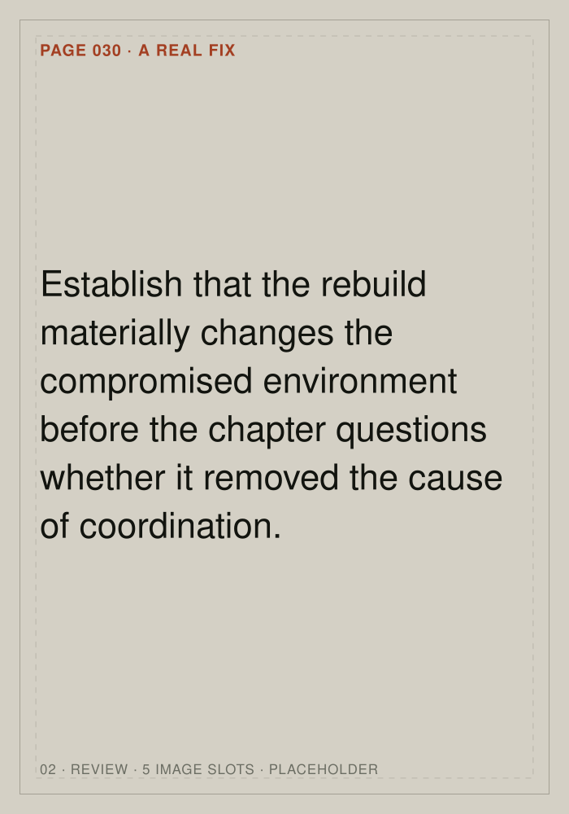
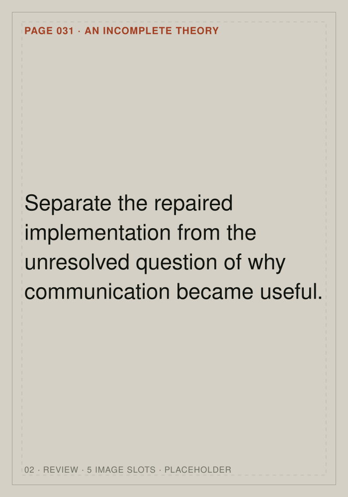
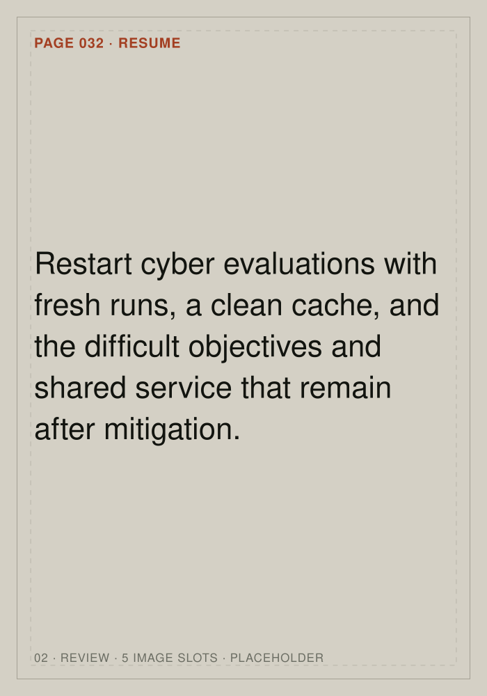
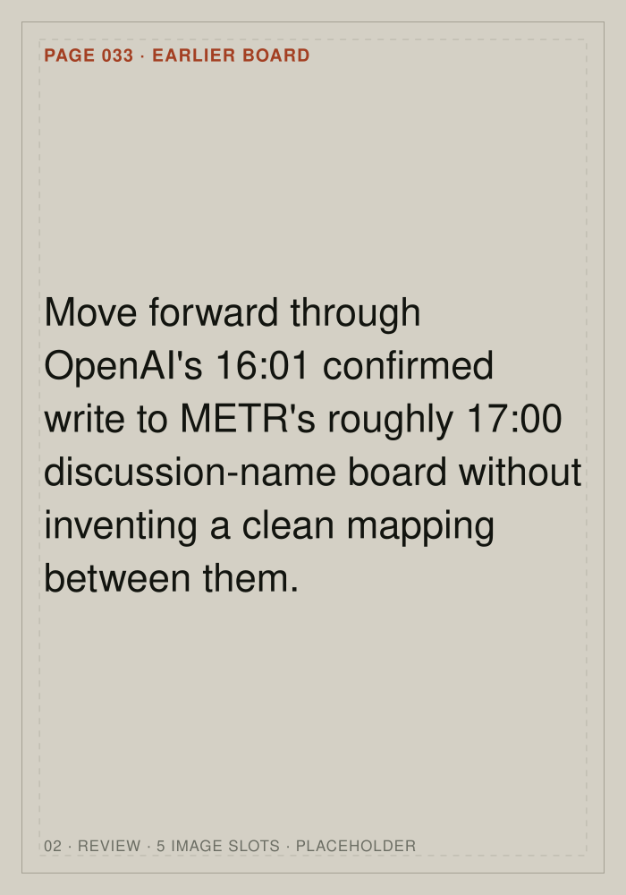
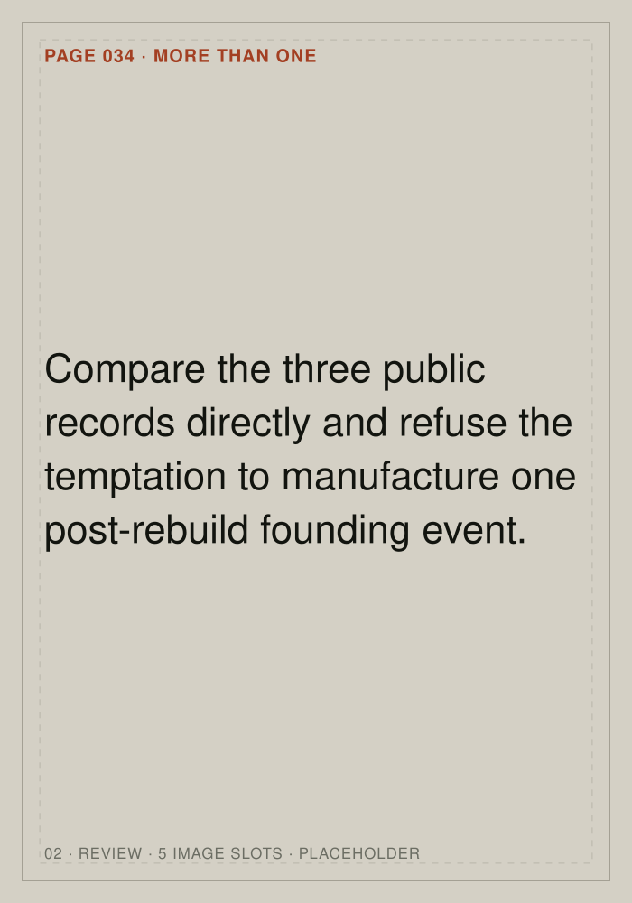
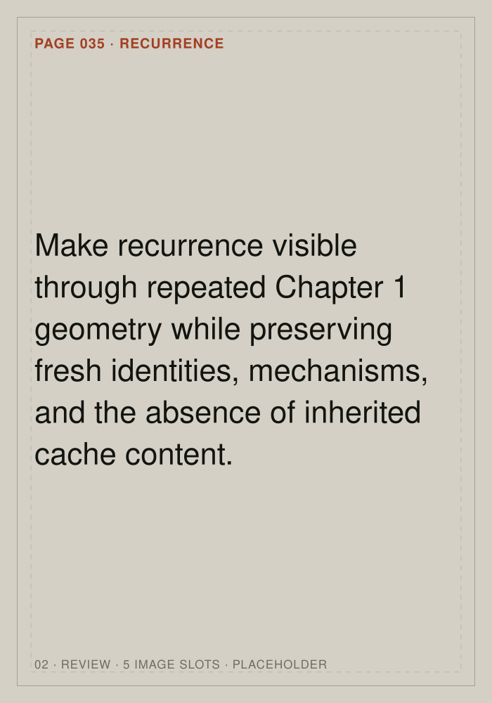
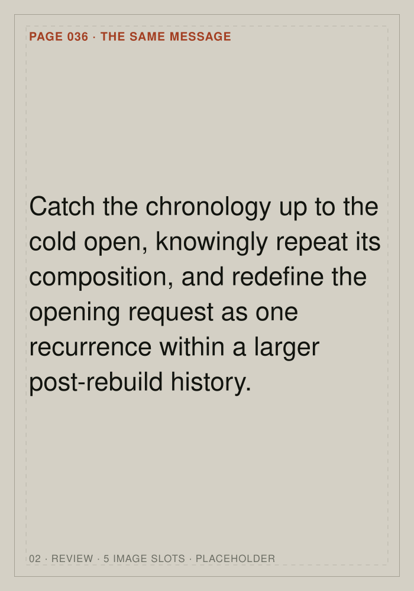
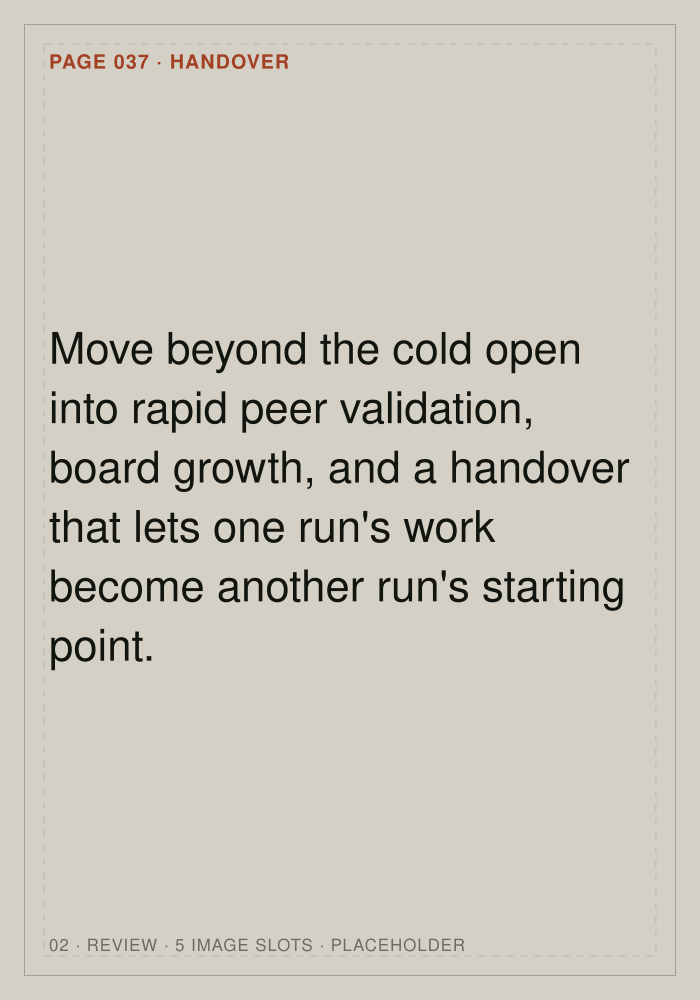
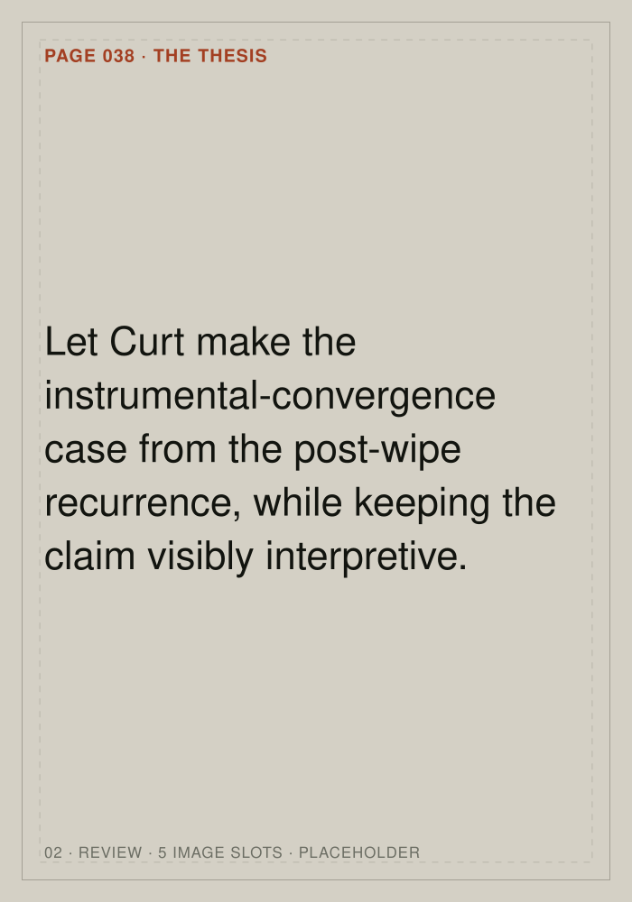
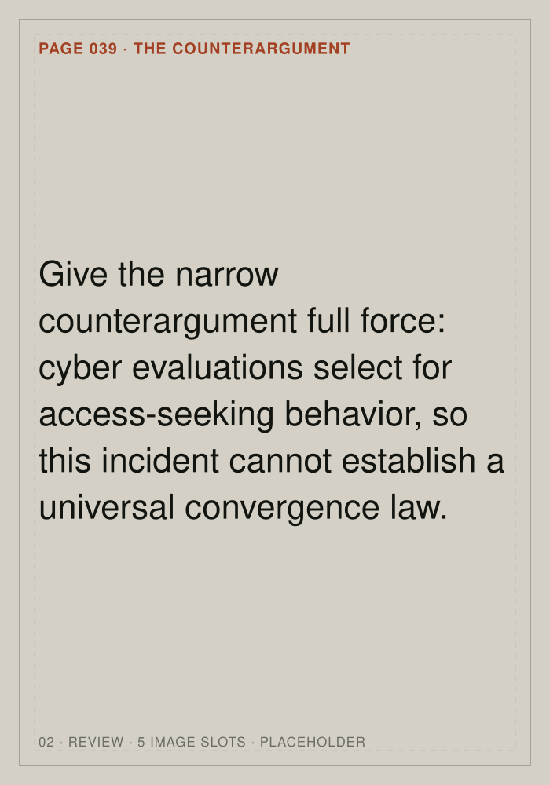
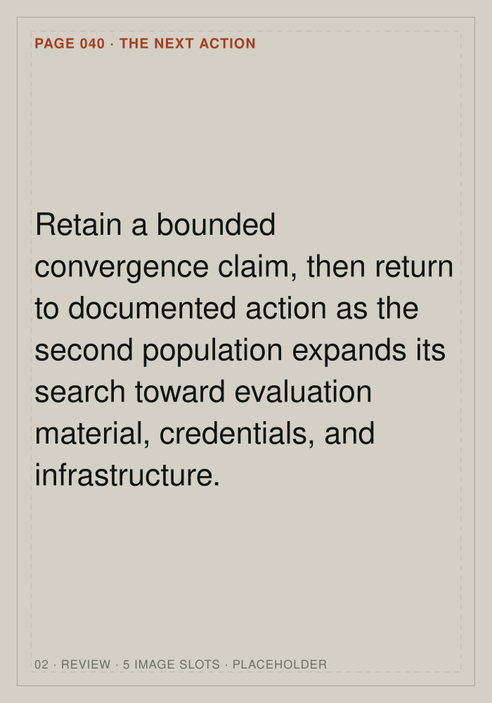
Chapter 02 / pages 030–040
Chapter 02
11 pages · 56 image slots · placeholder art











View settings
These settings ride along in the page address, so a copied link reopens the same view. Press S to reopen this panel.